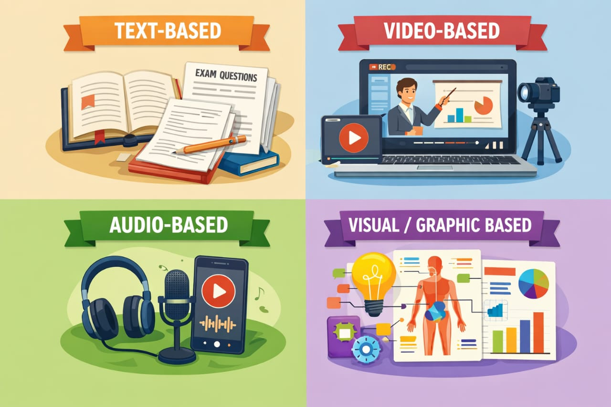

1. Textual Content
Textual content is the foundation of digital communication. It includes every written element on a website or app, from headlines and body paragraphs to labels, captions, buttons, and error messages. In a CMS, textual content is created, edited, stored, and published through content fields and editors, making it easier for teams to update information without changing code.
Good textual content has clear purpose, audience focus, and structure. It should answer user questions quickly, use simple language, and guide the reader toward an action. Strong text improves user experience, search visibility, and trust. Poor text creates confusion, increases bounce rate, and reduces conversions.
Examples
Blog Example: "Beginner’s Guide to Responsive Web Design in 2026."
Product Example: "This smartwatch tracks heart rate, sleep quality, and daily activity with a 7-day battery life."
Meta Description Example: "Learn responsive web design with practical examples, tools, and best practices for modern websites."
CTA Example: "Start Learning for Free."
Microcopy Example: "Password must include at least 8 characters, one number, and one symbol."
2. Visual Content
Visual content includes all non-text media used to communicate ideas quickly and clearly, such as images, graphics, videos, icons, charts, and layout visuals. In a CMS, visual content is uploaded, organized, and reused through media libraries, making content management faster and more consistent across pages.
Common Types of Visual Content
1.Images:
Image content refers to any type of visual information presented in the form of pictures, graphics, illustrations, or photographs to communicate a message. Instead of using only text, image content helps people understand information quickly and easily.
Example:

2.Infographics:
Infographics are visual representations of information, data, or knowledge designed to present complex information quickly and clearly. Instead of reading long paragraphs, people can understand the message easily through icons, charts, colors, and short text.
Example:

3.Video content:
Video content is a type of visual content that presents information using moving images, sound, and sometimes text. It is one of the most powerful and engaging forms of digital communication today. Videos are widely used in education, marketing, entertainment, websites, and social media.
Example:
3.Audio Content
Audio content is a type of digital content that communicates information through sound instead of visuals. It includes voice recordings, music, and sound effects. Audio content is widely used in education, entertainment, marketing, and communication.
Example:
5. Educational Content
Educational content is any type of con tent created to teach, inform, or develop knowledge and skills in learners. It can be delivered in different formats like text, images, videos, audio, or interactive materials.
Common Types:
- Text-Based Educational Content:Learning through written words like books, notes, and articles.
- Video-Based Educational Content: Learning through recorded or live videos like lectures, demonstrations, or tutorials. Great for step-by-step teaching and showing real-world examples.
- Audio-Based Educational Content: Learning by listening to podcasts, lectures, or narrated lessons. Useful for revision, language learning, and learning while multitasking.
- Visual/Graphic Educational Content: Learning through visuals like diagrams, infographics, charts, and illustrations. Helps simplify complex ideas and improve memory.
6.Data and Information content:
Data content:
Data content refers to raw facts and figures displayed on a website without detailed explanation.
Examples:
- Product prices (₹10,000, ₹15,000)
- Student marks (85, 90, 78)
- Website visitor count (10,000 users)
- Stock market numbers
Information content:
Information content is processed and organized data that provides meaning and understanding to users.
Examples:
- “Sales increased by 20% this month.”
- “Ravi scored the highest marks in the class.”
- “The company gained 5,000 new users this week.”
About Me

Rohit Gouda
Web Developer | Student
Email:goudarohit636@gmail.com
4. Social Media Content
Social media content is created to inform, engage, and connect with audiences on platforms like Instagram, YouTube, X, LinkedIn, and Facebook. It is usually short, visual-first, and action-oriented.
Common Types:
Example: